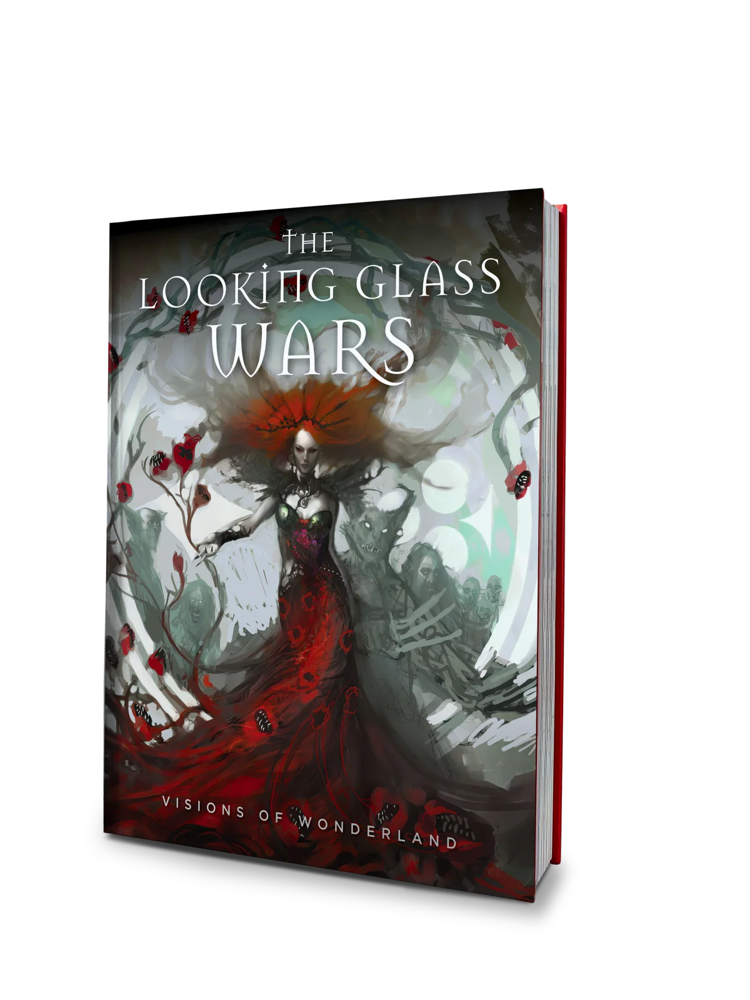
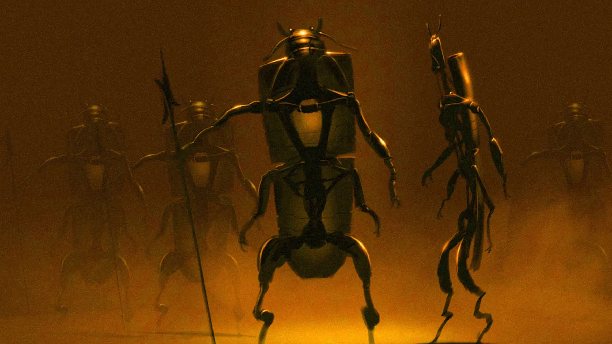
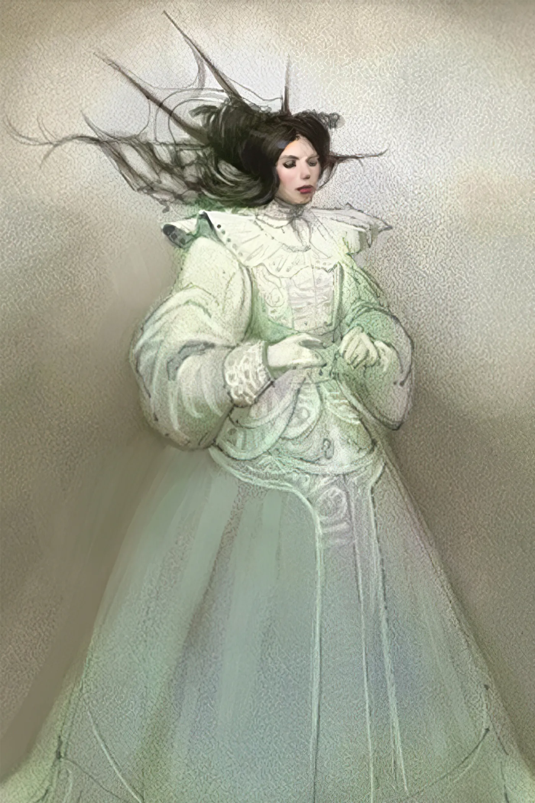
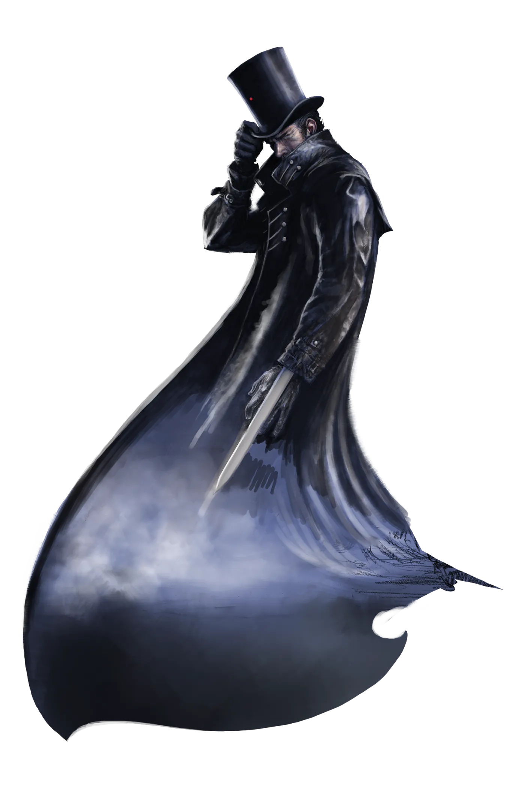
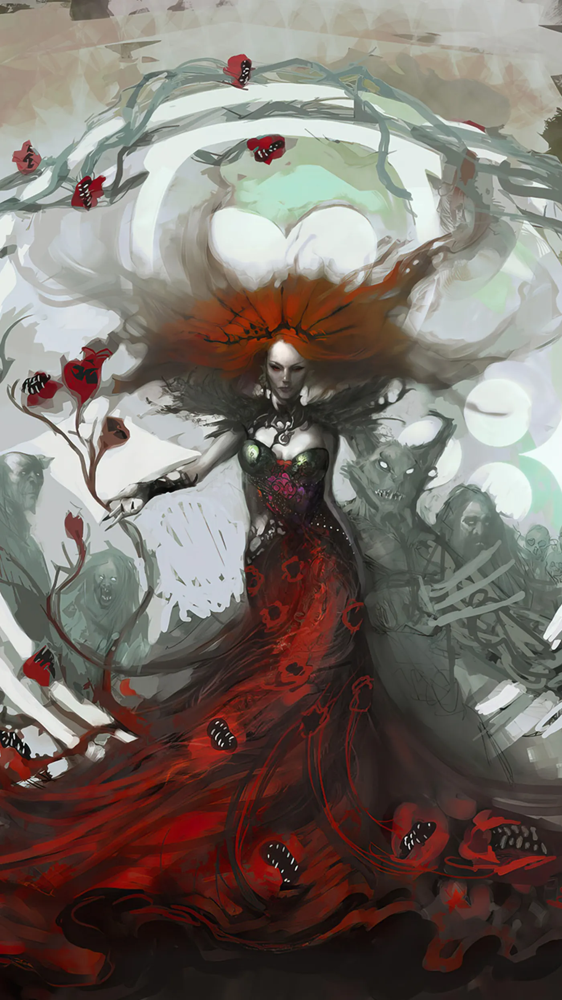
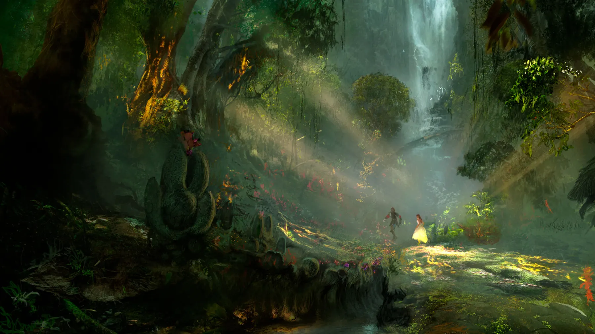
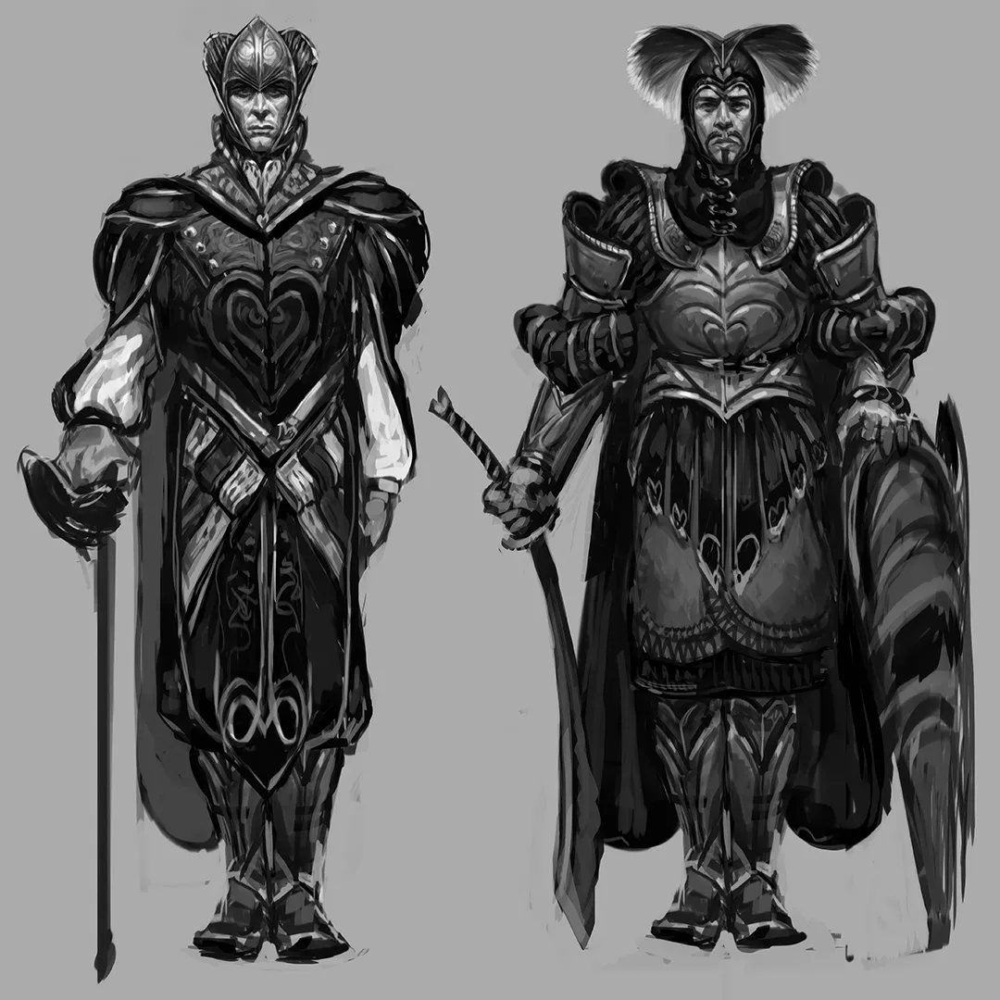
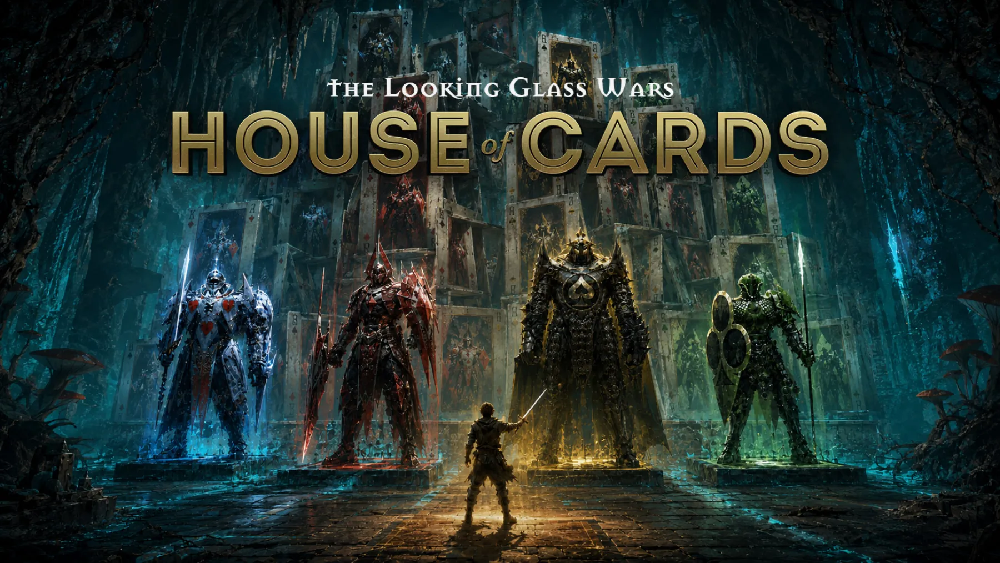

The greatest worlds are never imagined by one person alone.
For more than twenty-five years, some of the world's most celebrated artists, designers, and visual storytellers invested their imagination in Wonderland.
25 extraordinary artists.
One civilization imagined together.

The Academy Award winner who built the visual world of Star Wars gave Wonderland its folding card armies.

The Oscar winner behind the most-watched film in Netflix history gave Alyss her face — a princess in Wonderland, and a girl lost in Victorian England.

Guillermo del Toro's creature designer gave Hatter Madigan his darkness — and his Warrior Alyss is the cover of this book.

The artist behind Black Panther and the Planet of the Apes trilogy painted Queen Redd — and created the single most requested image in twenty-five years of LGW.

The matte painter behind The Matrix and Sin City built Wonderland from the ground up.

The man who put every Avenger in their suit dressed the Heart Palace guardsman — long before the world knew his name.
500 discoveries from a world that never stopped growing.
